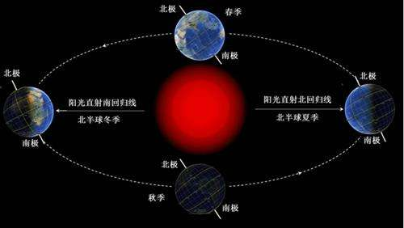

如果您的浏览器支持 bi-directional override (bdo)，下一行会从右向左输出 (rtl)；
Here is some Hebrew text这是长的引用：
blockquote这是长的引用。这是短的引用：
q,这是短的引用。
一打有 二十 十二 件。
大多数浏览器会改写为删除文本和下划线文本。
一些老式的浏览器会把删除文本和下划线文本显示为普通文本。
条件注释定义只有 Internet Explorer 执行的 HTML 标签。
百度一下，你就知道
百度一下，你就知道
春晓，我来啦
相信吗？我是一个链接
这是邮件链接： 发送邮件
注意：应该使用 %20 来替换单词之间的空格，这样浏览器就可以正确地显示文本了。
来自 W3School.com.cn 的图像：


图像  在文本中
在文本中
 带有图像的一个段落。图像的 align 属性设置为 "left"。图像将浮动到文本的左侧。
带有图像的一个段落。图像的 align 属性设置为 "left"。图像将浮动到文本的左侧。
图像映射 点击图片上的星球，把他们放大
注释：img 元素中的 "usemap" 属性引用 map 元素中的 "id" 或 "name" 属性（根据浏览器），所以我们同时向 map 元素添加了 "id" 和 "name" 属性。
| 姓名 | 电话 |
|---|---|
| row 0, cell 0 | row 0, cell 1 |
| 家族 | row 1, cell 0 |
| row 2, cell 0 | |